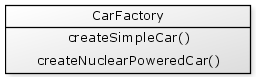

So we made a significant change to the engine, but because we kept the set of engine functions unchanged (i.e. we kept the interface the same) then we can readily swap our new nuclear powered engine into our Car object.
By separating the creation of our objects from the usage of our objects we have reduced coupling, improved maintainability, but increased the complexity of creating these objects. If you needed to create car objects in many places in your application it would become very messy very quickly due to the need for a core object, an engine object and a car object for each car with a nuclear engine. It is better to move this object construction into its own factory object.
This factory can hide any complexities associated with creating objects.

This may be implemented as follows:
{% highlight cfm %}Object factories are good candidates for being placed in the application scope:
{% highlight cfm %}And to use our factory, we may write:
{% highlight cfm %}The simple car's speed is #car.getCurrentSpeed()#
The nuclear powered car's speed is #car.getCurrentSpeed()#
Dependency Injection is the common term for this technique of associating objects, however this technique is also known as "Inversion of Control", or "IoC".
The idea behind this is that conventional control would see an object grabbing whatever things it needed, as applied in procedural programming. When this control is inverted your objects are instead given what they need and they are only permitted to use what they have been explicitly given.
Another term used to describe the joining of objects using dependency injection is wiring. In other words you may say that when one object is injected into another object then they are wired together.
One of the fundamental guides in good object oriented design is to have objects that have low coupling. Having objects that have single responsibilities and separating out object construction from object usage can significantly help in reducing the coupling between objects. The side effect of this is that object creation becomes more complicated, but an object factory provides a good technique to manage the creation of these objects.